It's commonly thought that the timing of a linear speed ramp for a stepper motor is too complex to be calculated in real time. The exact formula for the step delay is in Equation 8. The solution has been to store the ramp data in precompiled arrays, but this method is inflexible and wastes memory. The alternative has been to use a more powerful and expensive processor than otherwise needed or a high-level stepper-control IC. This article develops an accurate approximation that has been implemented in C using 24.8 fixed-point arithmetic on a mid-range PIC microcontroller.
Motor step signals can be generated by a 16-bit timer-comparator module as commonly integrated in microcontrollers. On the PIC, the CCP (capture/compare/pwm) performs this function. It allows steps to be timed to the resolution of one timer period. Each step advances the motor by a constant increment, typically 1.8 degrees on a hybrid stepper motor.
The timer frequency should be as high as possible while still allowing long delays as the motor is accelerated from stop. A timer frequency of 1MHz has been used. A maximum motor speed of 300rpm is then equivalent to a delay count of 1,000. It's necessary to have high timer resolution to give smooth acceleration at high speed.
Notation and basic formulas
Delay (sec) programmed by timer count c:
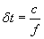 Equation 1
f = timer frequency (Hz).
Motor speed ω (rad/sec) at fixed timer count c:
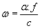 Equation 2
α = motor step angle (radian).
1rad = 180/π = 57.3deg. 1rad/sec = 30/π = 9.55rpm.
Acceleration ω' (rad/sec2) from adjacent timer counts c1 and c2:
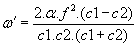 Equation 3
Equation 3 assumes fixed-count speed (Equation 2) at the midpoint of each step interval (Equation 1), as on a linear ramp, Figure 1. Note that ω' resolution is inversely proportional to the cube of the speed.
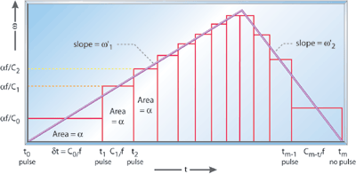
Figure 1: Ramp geometry: move of m=12 steps
Linear speed ramp—exact
On a linear ramp, acceleration ω' is constant, and speed ω(t) = ω'.t. Integration gives the motor shaft angle θ(t):
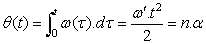 Equation 4
n ≥ 0 step number (real). When the shaft is at θ = n.α, (integer n) it's time for the nth step pulse:
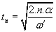 Equation 5
The exact timer count to program the delay between the nth and (n+1)th pulses (n ≥ 0) is:
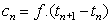 Equation 6
The initial count c0 factorizes out to give Equations 7 and 8:
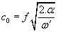 Equation 7
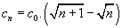 Equation 8
Note that c0 sets the acceleration, proportional to (1/c0)2 .
In real-time, Equation 8 would require calculation of a square-root for each step, with the added problem of loss of precision by subtraction.
Approximating linear ramp
Ratio of successive exact timer counts from Equation 8:
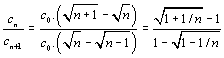 Equation 9
Taylor series:
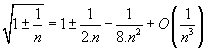 Equation 10
Equation 11 is the second-order approximation to Equation 9 using Equation 10:
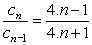 Equation 11
Equation 11 can be rearranged for faster calculation:
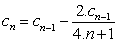 Equation 12
Finally, we can disconnect the physical step number, i, from the step number n on a ramp from zero, to give the general-purpose ramp algorithm shown in Equation 13. Here n determines the acceleration and increments with i for constant acceleration. To ramp up from stop, ni = i, i=1,2, . . . :
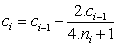 Equation 13
Negative n-values give deceleration. In particular, Equation 14, with ni = i - m, can be used to ramp any speed down to stop in the final steps of a move of m steps:
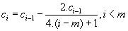 Equation 14
Table 1: Accuracy of the step-delay approximation
| Step n | Exact (9) | Approx (11) | Relative error |
| 1 | 0.4142 | 0.6000 | 0.4485 |
| 2 | 0.7673 | 0.7778 | 0.0136 |
| 3 | 0.8430 | 0.8462 | 0.00370 |
| 4 | 0.8810 | 0.8824 | 0.00152 |
| 5 | 0.9041 | 0.9048 | 7.66E-4 |
| 6 | 0.9196 | 0.9200 | 4.41E-4 |
| 10 | 0.9511 | 0.9512 | 9.42E-5 |
| 100 | 0.9950 | 0.9950 | 9.38E-8 |
| 1,000 | 0.9995 | 0.9995 | 9.37E-11 |
Accuracy of approximation
Table 1 shows that the approximation is accurate even at low step number n and relative error decreases with n3. However, n=1 has a significant inaccuracy. The inaccuracy at n=1 can be handled in two ways:
- Treat n=1 as a special case. Using c1 0.4056 c0 compensates for the inaccuracies at the start of the ramp and allows Equation 7 to be used to calculate c0.
- Ignore the inaccuracy. In place of Equation 7 use Equation 15:
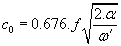 Equation 15
The first alternative gives an almost perfect linear ramp. The second alternative starts with a fast step. This is to the good, as it helps keep the motor moving between step pulses 0 and 1-and establishes the angle error needed to generate torque. It also allows a wider range of accelerations to be generated with a 16-bit timer and has the advantage of simplicity. It's therefore recommended to ignore the inaccuracy at n=1.

Figure 2: Stepper-motor speed ramp
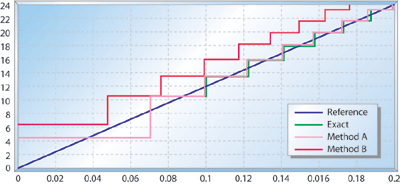
Figure 3: Start of ramp detail

Figure 4: End of ramp detail
Figures 2 through 4 compare the options for a target ramp from 0 to 120rpm in 1sec. For clarity, step changes in speed are shown, calculated from Equation 2. The true profile should be close to a straight line.
2.c/(4.n+1) in Equation 12 could be approximated by c/2.n. Some effects would be:
- The algorithm would still produce a linear ramp.
- c0 would be closer to the "exact" value shown in Equation 7: 88.6% instead of 67.6% for the same ramp acceleration.
- A single equation like Equation 13 could no longer be used for both acceleration and deceleration.
From Equations 4 and 5 we can obtain an expression for the step number n as a function of speed and acceleration:
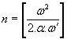 Equation 16
Thus the number of steps needed to reach a given speed is inversely proportional to the acceleration:
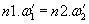 Equation 17
This makes it possible to change the acceleration at a point on the ramp by changing the step number n in the ramp algorithm Equation 13. Moreover, using signed ω' values results in signed n-values that behave correctly in the algorithm. Only ω' = 0 needs special handling.
The n-value given by Equation 17 is correct for tn. However cn represents an average for the interval tn .. tn+1. Equation 17 is usually adequate, but it's more accurate to add a half-step to n-values for use in the ramp algorithm:
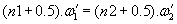 Equation 18
The numerical example shown in Table 2 changes acceleration from 10 to 5 and to -20rad/sec2 from step 200. Complex speed profiles can be built up piecewise in this way.
Table 2: Acceleration changes
| Step i | ni | ci (13) | ω' (3) | notes |
| 198 | 198 | 2,813.067 | 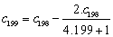 | |
| 199 |
199 398.5 -100.25 |
2,806.008 | 10 |
10.(199+.5) = 5.(398.5+.5) = -20.(-100.25+.5) |
| 200 | 399.5 | 2,803.498 | 5 | 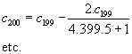 |
| 201 | 400.5 | 2,799.001 | 5 | |
| 200 | -99.25 | 2,820.180 | -20 | 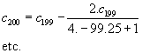 |
| 201 | -98.25 | 2,834.568 | -20 |
Deceleration ramp
For a short move of m steps, where the up-ramp at ω'1 meets the down-ramp at ω'2 before max speed is reached, the step number m at which to start decelerating is, from Equation 17:
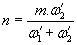 Equation 19
ω'1 = acceleration, ω'2 = deceleration (positive). Round n to integer and calculate cn .. cm-1 using Equation 14.
In other cases, Equations 17 or 18 can be used to calculate the number of steps n2 needed to stop at deceleration ω'2, given that the present speed was reached at step n1 with acceleration ω'1. Round n2 to integer and calculate cm-n2 .. cm-1 using Equation 14.
Smooth shift to max speed
The ideal speed profile would make a smooth transition from ramp acceleration ω' to max speed ωmax.
Higher speed is possible by reducing the acceleration near the top of
the ramp, and you can avoid possible undesirable effects of a
discontinuity in acceleration.
There are several ways to achieve a smooth transition while still allowing real-time computation on a low-end processor:
- Reduce ω' in stages, giving a piecewise linear transition.
- Add a power term to the denominator of the ramp algorithm.
- Scale the change from ci-1 to ci by a linear factor.
Piecewise linear
This method, shown in Figure 5, is very flexible. Any number of breaks can be used. A set of ω-values is chosen at which ω' is successively reduced. The ramp algorithm in Equation 13 is used. At each step, n is incremented, and if ω (or c) crosses a break value, n is recalculated.
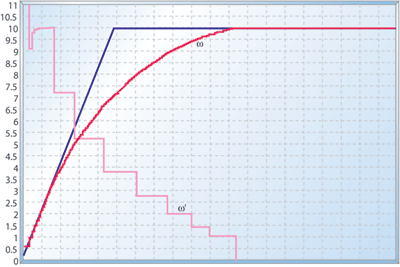
Figure 5: Piecewise
Figure 5 results from the jth break given by (c)j=0 = 3.cmin, (c)j = ((c)j- 1+cmin)/2, (ni)j = 1.375.(ni- 1+1), j = 1,2,..,7. (c)j = delay count at jth break, cmin, = delay count at ωmax.
Power term
Equation 20 adds a power term to the denominator of the ramp algorithm (Equation 12):
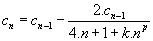 Equation 20
At low speed (low step-number n), the power term k·np is negligible, so acceleration is constant. As speed rises, k·np starts to dominate, eventually reducing the acceleration to zero. A higher power p produces a sharper "knee." The approach to ωmax is asymptotic.
The transition occurs around k·np = 4.n. This can be used to calculate an approximate value for the constant k from initial acceleration ω' and required max speed ωmax:
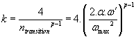 Equation 21
The graphs in Figure 6 use Equation 21 to calculate k for p=2,3,4,5. The curve falls short of ωmax for p=2 but k is good for higher powers.

Figure 6: Power term, p=2,3,4,5
Linear factor
In this method we run the ramp algorithm (Equation 12) up to step n1 and then scale the changes in c by a factor that reduces from 1 at step n1 to 0 at step n2:
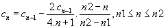 Equation 22

Figure 7: Linear factor
The acceleration curve is fairly linear and symmetrical over the transition. ωmax is reached in about twice the time taken with no transition, as shown in Figure 7. ωmax can be estimated by integrating a continuous version of Equation 22,
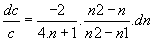. We obtain:
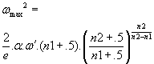 Equation 23
Equation 23 is accurate for a wide range of parameters, including n1=0. It then simplifies to Equation 24 (compare with Equation 16):
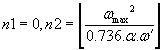 Equation 24
In Figure 7, the linear factor method is applied with transition ranges starting at 0 and 30%, 50%, and 70% of ωmax.
A linear-factor transition can also be applied to the downramp:
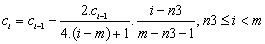 Equation 25
Step-number n3, the start of the transition from max speed to the down-ramp, is calculated as in the previous example. For a short move, n3=n2, calculated by Equation 19.

Figure 8: Linear factor: dual transitions
Figure 8 shows examples with and without a section at ωmax: m=700, ω'1 =10, ω'2 = -20, n1=0, n2=432, n3=484; and m=500, n2=n3=333, other parameters unchanged.
Transition methods in sum
The form of the transition curve is assumed to be less
important than ease of calculation and control of parameters,
particularly ωmax and the size of the transition region.
The piecewise-linear method is flexible and can be arranged to require no more calculation than a simple ramp, and give a visually smooth speed profile. It may not work with some sets of parameters, though.
In the power-term method, the k-parameter is easily calculated from ωmax. Calculating the power term creates problems in fixed-point arithmetic, as values vary over a wide range.
The linear-factor method is recommended as reliable and easy to calculate in fixed-point arithmetic. Because ωmax is reached at a known step number, the method is good for short moves and can transition from acceleration to deceleration with no discontinuity, as Figure 8 demonstrates. Starting the transition at n1=0 gives a narrow transition region, and it's straightforward to calculate n2 from ωmax.
The methods are compared in Figures 5 through 7.
Implementation
You can implement this stepper-control algorithm using a
PIC18F252 and a L6219. The L6219 stepper driver IC performs the
following functions:
- Provides diode-protected H-bridge drives capable of 46V/750mA to the two motor windings
- Translates digital signals from the PIC to current direction in the motor windings (PHASE1, 2 inputs)
- Limits each winding current to 0, 33%, 67%, or 100% of a preset value by chopping the drive to the H-bridge transistors (inputs I01, I11, I02, I12)
The L6219 doesn't have "step" and "direction" control lines like some stepper control ICs. The winding phase sequence must be provided by the PIC. This makes control slightly more complicated but gives extra flexibility and reduces cost. It also means that the phase can be restored easily on power-up.
By using the I-inputs, the L6219 can be used for half- and quarter-step operation. For full-step, they can be tied together and driven by one GPIO from the PIC.
Microchip's PIC18F252 is a 28-pin device with the same footprint as the PIC16F876. The more powerful core of the '252 makes it easier to program in C. Figure 9 shows how the internal timing resources were configured for controlling the L6219.
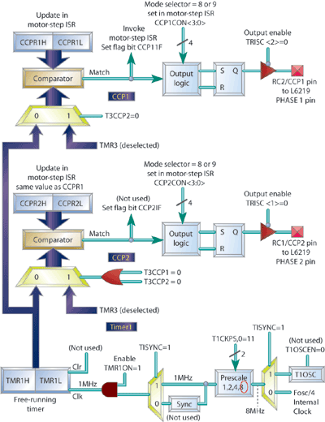
Figure 9: PIC18F252 timer configuration for L6219 interface
An 8MHz crystal and the PIC's ×4 PLL frequency multiplier are used to generate a 32MHz processor clock. This is divided by four to clock the timers at 8MHz. Driving the motor involves the following sequence:
- Get parameters: step count, direction, delay count c0, max speed and so forth.
- Set up hardware: initialise CCP1 and CCP2, enable motor current, enable CCP1 interrupts.
- Service CCP1 interrupts: count the steps and execute a state machine to reconfigure the CCPs and calculate the next timer value.
- Clean up: after the last step, disable CCP1 interrupts, current off, flag the move done.
Stepping out
The real-time algorithms I've explained here
significantly reduce the processing power needed for smooth speed
control of stepper motors. The linear ramp algorithm can be adapted to
piecewise linear speed profiles and smooth transitions from ramp to max
speed.
David Austin is a freelance software engineer from Durham, U.K. You can reach him at dave@slotech.fsnet.co.uk.
Resources
Acarnley, Paul. Stepping Motors— A Guide to Theory and Practice, 4th edition. London: Institution of Electrical Engineers, 2002.
Kenjo, Takashi and Akira Sugawara. Stepping Motors and their Microprocessor Controls, 2nd edition. Oxford University Press, March, 1995.
Control of Stepping Motors— A Tutorial www.cs.uiowa.edu/~jones/step/
Suppliers' Web sites:
PIC18F252 www.microchip.com
L6219 www.st.com
PIC C compiler www.ccsinfo.com
Stepper motors www.rotalink.com
Mathcad (graphs) www.mathsoft.com